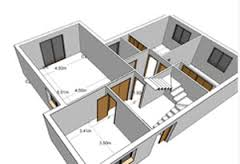

Bienvenido
Arturo Vazquez A
17 de junio 2017
Home
|
Cerrar Sesión
NUEVO REPORTE
Norma:
NOM-003-SEGOB-2011
×
Que el Plan Nacional de Desarrollo 2001-2006 definió como política interior, que el Ejecutivo Federal aumentara la capacidad preventiva del Sistema Nacional de Protección Civil y mitigara los efectos de los desastres, a partir de una mayor coordinación de esfuerzos intergubernamentales y de la promoción de la contribución ciudadana, estableciendo dentro de su objetivo rector 5, el transitar de un sistema de protección civil reactivo a uno preventivo con la corresponsabilidad y participación de los tres órdenes de gobierno, población y sectores social y privado.
×
Que el Plan Nacional de Desarrollo 2001-2006 definió como política interior, que el Ejecutivo Federal aumentara la capacidad preventiva del Sistema Nacional de Protección Civil y mitigara los efectos de los desastres, a partir de una mayor coordinación de esfuerzos intergubernamentales y de la promoción de la contribución ciudadana, estableciendo dentro de su objetivo rector 5, el transitar de un sistema de protección civil reactivo a uno preventivo con la corresponsabilidad y participación de los tres órdenes de gobierno, población y sectores social y privado.
×

Figura 1:
×
Que el Plan Nacional de Desarrollo 2001-2006 definió como política interior, que el Ejecutivo Federal aumentara la capacidad preventiva del Sistema Nacional de Protección Civil y mitigara los efectos de los desastres, a partir de una mayor coordinación de esfuerzos intergubernamentales y de la promoción de la contribución ciudadana, estableciendo dentro de su objetivo rector 5, el transitar de un sistema de protección civil reactivo a uno preventivo con la corresponsabilidad y participación de los tres órdenes de gobierno, población y sectores social y privado.
×